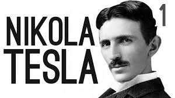
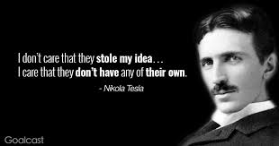

Nikola Tesla was born an ethnic Serb in the village Smiljan, Lika county, in the Austrian Empire (present day Croatia), on 10 July [O.S. 28 June] 1856. His father, Milutin Tesla (1819–1879), was an Eastern Orthodox priest. Tesla's mother, Đuka Tesla (née Mandić; 1822–1892), whose father was also an Orthodox priest, had a talent for making home craft tools and mechanical appliances and the ability to memorize Serbian epic poems. Đuka had never received a formal education. Tesla credited his eidetic memory and creative abilities to his mother's genetics and influence. Tesla's progenitors were from western Serbia, near Montenegro.
Tesla was the fourth of five children. He had three sisters, Milka, Angelina and Marica, and an older brother named Dane, who was killed in a horse riding accident when Tesla was aged five. In 1861, Tesla attended primary school in Smiljan where he studied German, arithmetic, and religion. In 1862, the Tesla family moved to the nearby Gospić, Lika where Tesla's father worked as parish priest. Nikola completed primary school, followed by middle school.
More
|  |
|  |